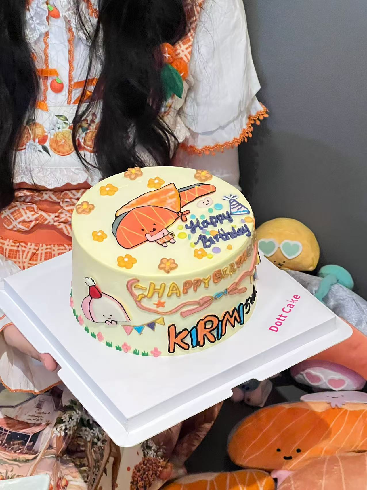

Helen ➩ Could you briefly introduce yourself? Including your nickname, pronouns, age, and current occupation.
Kirimilvy ➩ You can call me Kirimilvy. My name is Ivy, but because I love Kirimi so much, I changed my nickname to Kirimilvy. My pronouns are she/her, and my current job is corporate administration.
H ➩ Before you were selected as the interviewee, I learned that you’ve had a parasocial relationship with KIRIMIchan. Could you briefly describe how you built such a relationship with this fictional character? Was it primarily through certain media (manga/comics, anime/animation, games, novels, movies, TV dramas, etc.)?
K ➩ Since Kirimi is a relatively niche character under Sanrio, it’s not as popular as Hello Kitty, which has its own movies, TV shows, novels, etc. I first discovered Kirimi through a fan account on a social media platform I used—someone ran a Twitter (now X) account dedicated to reposting Kirimi images. At the time, overseas shopping wasn’t as accessible, and I didn’t know how to buy Kirimi merchandise. There were very few people in my country who knew about it, so naturally, there weren’t many sellers either. Later, as I gradually learned about overseas shopping platforms (like Amazon, Mercari, Rakuma, Carousell, Shopee, etc.), I started buying lots of Kirimi merchandise. At first, I only bought reasonably priced, cute, and practical items, but then my collector’s obsession kicked in—I wanted to bring home every Kirimi item within my financial reach.
KIRIMIchan. is an adorable salmon-themed character created through a collaboration between Sanrio and the Japan Fisheries Association. She was introduced to promote the nutritional value and delicious taste of salmon while also raising awareness about Japanese aquatic culture. Her likeness appears not only on Sanrio merchandise but also frequently features in salmon-related campaigns and promotional activities, such as recipe sharing and educational programs on fisheries. KIRIMIchan. made her debut after winning first place in Japan's 2013 Food Character General Election by public vote. At the time, she was the first character designed as a sliced sashimi, and her innovative concept made her an instant sensation upon her debut.
Kirimi has an official Twitter (now X) account, and the official page releases new designs or pics of Kirimi every couple of days. Its long fish body and tiny figure really hit my soft spot. Every day, I check the official account and keep up with Kirimi’s collaborations. This relationship feels a bit like… it’s my baby, and I’m in a motherly role? (not sure hahaha) I follow all its updates and try to collect every piece of merchandise I can get.
Now I feel like I’ve mellowed out a bit. Back when I first got into Kirimi, I’d stay up late every night digging through old information about it. When Kirimi first debuted, there were tons of offline events and collaborations, but this was around 2014–2015, when smartphones were just becoming common, so there wasn’t much info online, and the photos were all in low quality.
H ➩ May I ask when you first started liking KIRIMIchan.?
K ➩ It was probably around 2018 or 2019. But Kirimi debuted in 2013, so I wasn’t exactly an early fan.
H ➩ You’ve liked Kirimi-chan since 2018 or 2019—that’s about seven years now. Over time, have you noticed any changes in this relationship?
K ➩ I feel like our bond has grown stronger! At first, it was just about getting to know the IP and being interested. Later, I started integrating Kirimi into my daily life, then even threw a birthday party for Kirimi (for its 10th anniversary in 2023). And in 2024, I flew to Japan to celebrate Kirimi’s birthday!
These are photos from Kirimi’s 10th-anniversary celebration I held for Kirimi.
And this is from my trip to Sanrio Puroland in Japan this year, specifically to celebrate Kirimi’s birthday. Unfortunately, we ran into a typhoon, and the weather was terrible. It was a gamble whether I’d even get to see Kirimi. But luckily, every step of the meet-and-greet went smoothly—if any part had been delayed, I would’ve missed the 20-minute session. Kirimi only appears on August 31st (its birthday), not even on September 1st. So for me, if I hadn’t made it to this event, the whole trip would’ve been a waste. Even though a lot went wrong, being able to celebrate Kirimi’s birthday in Japan that day was truly a happy moment.
I also went to Japan in 2023.
And this is my own birthday party this year! I design my birthday cake every year, and this time, it was a matching parent-child outfit—you can see Kirimi and I wearing the same triangle scarf!

H ➩ Do you think this relationship has had an impact on your real life? Has it been positive, negative, or a mix of both? Earlier, you mentioned having a collector’s habit—do you feel very disappointed when you can’t get the merchandise you want?
K ➩ I think it’s had a huge impact on me, mostly positive. After start liking Kirimi, my life has been filled with Kirimi elements—like all my social media profile pictures, phone lock screens, and chat wallpapers featuring Kirimi.
It gives me a kind of strength, adding a bit more hope to my daily life. The first thing I do every morning is check online shopping sites to see if there’s new Kirimi merch. If there is and I don’t have it yet, I buy it. Of course, when I miss out on something I wanted and see it marked as “sold,” I definitely feel upset. I’ll vent to my friends, but usually, it’s because I wasn’t quick enough checking the listings. I’ll just have to try harder next time haha.